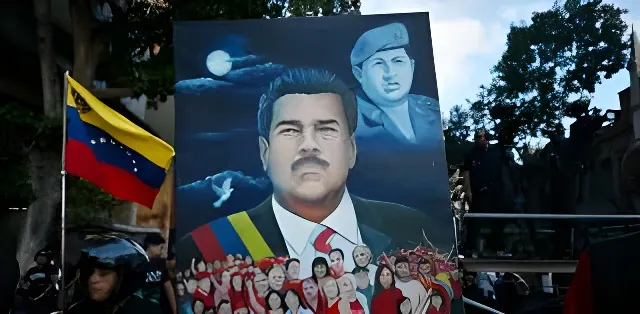

Après plus de deux décennies de chavisme, le Venezuela traverse une période charnière. La fragilisation du régime Maduro, accélérée par la crise économique, les sanctions internationales et la contestation électorale de 2024, a ouvert un processus de recomposition politique dont l'issue reste profondément incertaine. Entre espoir de normalisation et risque d'enlisement, analyse d'un pays à la croisée des chemins.
Pour comprendre la période post-Maduro, il faut mesurer l'ampleur du désastre laissé par deux décennies de bolivarisme. Lorsque Hugo Chávez décède en 2013, laissant le pouvoir à Nicolás Maduro, le Venezuela est encore le pays le plus riche d'Amérique latine en réserves pétrolières prouvées. Dix ans plus tard, le tableau est celui d'un effondrement sans précédent en temps de paix : une contraction du PIB estimée à 75 % entre 2013 et 2023, une hyperinflation ayant culminé à plusieurs millions de pourcents annuels, et une émigration massive de 7,7 millions de personnes selon le Haut-Commissariat des Nations Unies pour les réfugiés.
Maduro a maintenu le régime au pouvoir en s'appuyant sur trois piliers : le contrôle des forces armées via des avantages économiques (participation aux trafics de drogue, gestion des ressources pétrolières), l'appui diplomatique de Cuba, de la Russie et de la Chine, et un système de répression politique sophistiqué — les colectivos armés et le service de renseignement SEBIN — qui a fait du Venezuela l'un des pays les plus répressifs du continent.
Le 28 juillet 2024, le Venezuela tient une élection présidentielle qui va cristalliser toutes les tensions du régime. L'opposition, rassemblée derrière Edmundo González Urrutia et portée par la figure charismatique de María Corina Machado — privée du droit de se présenter —, revendique une victoire massive avec 57 % des suffrages, étayée par des actes de vote (actas) collectés dans plus de 80 % des bureaux de vote.
Le Conseil national électoral, contrôlé par le régime, proclame Maduro vainqueur avec 51 % des voix sans produire les résultats détaillés. La communauté internationale, y compris des pays traditionnellement proches comme le Brésil de Lula et la Colombie de Petro, exige la publication des actas. Les manifestations qui suivent sont violemment réprimées : plus de 2 000 arrestations, une vingtaine de morts, et l'exil forcé de González en Espagne.
Élection présidentielle. Maduro proclamé vainqueur par le CNE. L'opposition publie les actas et revendique la victoire de González. Manifestations réprimées.
González s'exile en Espagne. Machado reste au Venezuela en semi-clandestinité. Vague d'arrestations d'opposants, de journalistes et de membres de la société civile.
Maduro prête serment pour un troisième mandat. Les États-Unis, l'UE et la majorité des pays d'Amérique latine refusent de reconnaître sa réélection. Nouvelles sanctions américaines.
Fractures au sein du chavisme. Des dissidences internes signalées dans les forces armées et parmi certains cadres du PSUV. Négociations informelles facilitées par la Norvège.
Détérioration de l'économie malgré une légère reprise pétrolière. Maduro multiplie les arrestations de figures de l'opposition. Machado libérée brièvement puis reconduite sous surveillance.
Situation de blocage. Maduro maintient le pouvoir sans légitimité internationale. L'opposition reste mobilisée depuis l'exil. La question d'une transition négociée reste ouverte.
Paradoxalement, la situation économique du Venezuela, après des années d'hyperinflation catastrophique, a connu une relative stabilisation à partir de 2021. La dollarisation de facto de l'économie — non officielle mais tolérée par le régime — a permis de mettre fin à l'hyperinflation. Les marchés de Caracas se sont progressivement réouverts, alimentés par les dollars de la diaspora et des exportations pétrolières partielles. Pourtant, cette stabilisation est profondément inégalitaire : elle profite à une petite minorité dollarisée tandis que les 70 % de la population vivant en dessous du seuil de pauvreté restent largement exclus de cette reprise.
| Indicateur | 2018 (pic de crise) | 2025 |
|---|---|---|
| Inflation annuelle | > 1 000 000 % | ~50 % |
| Production pétrolière | ~1,5 Mb/j (2013) | ~900 000 b/j |
| Pauvreté extrême | > 50 % | ~40 % |
| PIB/habitant (USD) | ~3 200 | ~1 600 |
| Émigration cumulée | ~3 M | 7,7 M |
Sur le plan international, le Venezuela de Maduro présente le paradoxe d'un régime isolé de l'Occident mais maintenu en vie par ses alliés stratégiques. La Russie y voit un pied-à-terre géopolitique dans l'hémisphère occidental et un marché pour ses armements. La Chine a investi plusieurs dizaines de milliards dans le secteur pétrolier et n'entend pas abandonner ses créances. Cuba, enfin, entretient des milliers de coopérants au sein des forces de sécurité et des services de renseignement vénézuéliens, dans une relation de dépendance mutuelle.
La posture des grands pays régionaux a évolué. Le Brésil de Lula et la Colombie de Petro — pourtant des alliés naturels du bolivarisme — ont choisi de conditionner leur soutien à la transparence électorale, rompant avec une forme de solidarité idéologique aveugle. Cette évolution traduit un réalisme croissant face à l'ampleur de la crise migratoire : le Brésil et la Colombie accueillent respectivement plus de 500 000 et 2,8 millions de Vénézuéliens.
« Le peuple vénézuélien a décidé. Ces résultats existent, ils sont incontestables. »
— María Corina Machado, août 2024, en référence aux actas publiées par l'opposition« Nous avons gagné et nous allons gouverner. »
— Nicolás Maduro, nuit du 28 juillet 2024, après la proclamation du CNELes analystes dessinent principalement trois scénarios pour la suite. Le premier, celui du statu quo autoritaire, voit Maduro consolider son contrôle en s'appuyant sur les militaires et ses alliés extérieurs, au prix d'un isolement international durable et d'une économie en survie permanente. Le second, d'une transition négociée, reste possible si des pressions internes et externes suffisantes contraignent le régime à accepter un accord de sortie garantissant l'impunité de ses cadres — sur le modèle des négociations facilitées par la Norvège depuis 2019. Le troisième, le plus imprévisible, est celui d'une rupture interne au sein du chavisme ou des forces armées, susceptible d'ouvrir un processus constituant.
Ce qui se joue au Venezuela dépasse la question d'un régime et de ses dirigeants. C'est l'avenir d'un modèle et d'une génération entière. Près de huit millions de Vénézuéliens vivent hors de leurs frontières, portant avec eux une double exigence : celle d'un retour possible et celle d'un pays reconstruit. Toute sortie de crise durable devra articuler justice transitionnelle, reconstruction économique et réconciliation nationale — un défi immense pour une société profondément polarisée. L'histoire du Venezuela post-Maduro reste à écrire, mais ses premières pages signalent déjà que ce pays ne sera jamais simplement la page blanche que certains espèrent ni la continuité que d'autres cherchent à imposer.
Tras más de dos décadas de chavismo, Venezuela atraviesa un período de encrucijada. El debilitamiento del régimen de Maduro, acelerado por la crisis económica, las sanciones internacionales y la impugnación electoral de 2024, abrió un proceso de recomposición política cuyo desenlace sigue siendo profundamente incierto. Entre esperanza de normalización y riesgo de estancamiento, análisis de un país en la encrucijada.
Para comprender el período post-Maduro, hay que medir la magnitud del desastre dejado por dos décadas de bolivarismo. Cuando Hugo Chávez muere en 2013, dejando el poder a Nicolás Maduro, Venezuela sigue siendo el país más rico de América Latina en reservas petroleras probadas. Diez años después, el panorama es el de un colapso sin precedentes en tiempos de paz: una contracción del PIB estimada en 75 % entre 2013 y 2023, una hiperinflación que llegó a varios millones de porcientos anuales, y una emigración masiva de 7,7 millones de personas según el ACNUR.
Maduro mantuvo el régimen en el poder apoyándose en tres pilares: el control de las fuerzas armadas mediante ventajas económicas (participación en el narcotráfico, gestión de los recursos petroleros), el apoyo diplomático de Cuba, Rusia y China, y un sofisticado sistema de represión política — los colectivos armados y el servicio de inteligencia SEBIN — que convirtió a Venezuela en uno de los países más represivos del continente.
El 28 de julio de 2024, Venezuela celebra una elección presidencial que cristalizará todas las tensiones del régimen. La oposición, unida en torno a Edmundo González Urrutia y sostenida por la carismática figura de María Corina Machado —privada del derecho a presentarse—, reivindica una victoria aplastante con el 57 % de los sufragios, respaldada por actas recogidas en más del 80 % de las mesas de votación.
El Consejo Nacional Electoral, controlado por el régimen, proclama a Maduro vencedor con el 51 % sin publicar los resultados detallados. La comunidad internacional, incluidos países tradicionalmente cercanos como el Brasil de Lula y la Colombia de Petro, exige la publicación de las actas. Las protestas que siguen son reprimidas violentamente: más de 2 000 detenidos, una veintena de muertos y el exilio forzado de González a España.
Elección presidencial. Maduro proclamado vencedor por el CNE. La oposición publica las actas y reivindica la victoria de González. Protestas reprimidas.
González se exilia en España. Machado permanece en Venezuela en semiclandestinidad. Ola de detenciones de opositores, periodistas y miembros de la sociedad civil.
Maduro presta juramento para un tercer mandato. EE.UU., la UE y la mayoría de los países latinoamericanos se niegan a reconocer su reelección. Nuevas sanciones estadounidenses.
Fisuras dentro del chavismo. Disidencias internas señaladas en las fuerzas armadas y entre algunos cuadros del PSUV. Negociaciones informales facilitadas por Noruega.
Deterioro económico pese a una leve recuperación petrolera. Maduro multiplica las detenciones de figuras opositoras. Machado liberada brevemente, luego puesta bajo vigilancia.
Situación de bloqueo. Maduro mantiene el poder sin legitimidad internacional. La oposición sigue movilizada desde el exilio. La cuestión de una transición negociada permanece abierta.
Paradójicamente, la situación económica de Venezuela, tras años de hiperinflación catastrófica, experimentó una relativa estabilización a partir de 2021. La dolarización de facto de la economía — no oficial pero tolerada por el régimen — permitió poner fin a la hiperinflación. Los mercados de Caracas se reabrieron progresivamente, alimentados por los dólares de la diáspora y las exportaciones petroleras parciales. Sin embargo, esta estabilización es profundamente desigual: beneficia a una pequeña minoría dolarizada mientras que el 70 % de la población que vive bajo el umbral de la pobreza sigue excluido en gran medida de esta recuperación.
| Indicador | 2018 (pico de crisis) | 2025 |
|---|---|---|
| Inflación anual | > 1 000 000 % | ~50 % |
| Producción petrolera | ~1,5 Mb/d (2013) | ~900 000 b/d |
| Pobreza extrema | > 50 % | ~40 % |
| PIB/habitante (USD) | ~3 200 | ~1 600 |
| Emigración acumulada | ~3 M | 7,7 M |
En el plano internacional, el Venezuela de Maduro presenta la paradoja de un régimen aislado de Occidente pero mantenido con vida por sus aliados estratégicos. Rusia ve en él una cabeza de puente geopolítica en el hemisferio occidental y un mercado para su armamento. China ha invertido decenas de miles de millones en el sector petrolero y no tiene intención de abandonar sus créditos. Cuba, finalmente, mantiene miles de cooperantes dentro de las fuerzas de seguridad y los servicios de inteligencia venezolanos, en una relación de dependencia mutua.
La postura de los grandes países regionales ha evolucionado. El Brasil de Lula y la Colombia de Petro — aliados naturales del bolivarismo — optaron por condicionar su apoyo a la transparencia electoral, rompiendo con una forma de solidaridad ideológica ciega. Esta evolución refleja un pragmatismo creciente ante la magnitud de la crisis migratoria: Brasil y Colombia acogen respectivamente a más de 500 000 y 2,8 millones de venezolanos.
« El pueblo venezolano decidió. Estas actas existen, son incontestables. »
— María Corina Machado, agosto de 2024, en referencia a las actas publicadas por la oposición« Ganamos y vamos a gobernar. »
— Nicolás Maduro, noche del 28 de julio de 2024, tras la proclamación del CNELos analistas perfilan tres escenarios principales. El primero, el del statu quo autoritario, ve a Maduro consolidar su control apoyándose en los militares y sus aliados exteriores, a costa de un aislamiento internacional duradero y una economía en supervivencia permanente. El segundo, el de una transición negociada, sigue siendo posible si presiones internas y externas suficientes obligan al régimen a aceptar un acuerdo de salida que garantice la impunidad de sus cuadros — siguiendo el modelo de las negociaciones facilitadas por Noruega desde 2019. El tercero, el más impredecible, es el de una ruptura interna dentro del chavismo o de las fuerzas armadas, susceptible de abrir un proceso constituyente.
Lo que está en juego en Venezuela va más allá de la cuestión de un régimen y sus dirigentes. Es el futuro de un modelo y de toda una generación. Casi ocho millones de venezolanos viven fuera de sus fronteras, portando una doble exigencia: la de un regreso posible y la de un país reconstruido. Cualquier salida de crisis duradera deberá articular justicia transicional, reconstrucción económica y reconciliación nacional — un reto inmenso para una sociedad profundamente polarizada. La historia del Venezuela post-Maduro aún está por escribirse, pero sus primeras páginas ya revelan que este país nunca será la página en blanco que algunos esperan ni la continuidad que otros pretenden imponer.